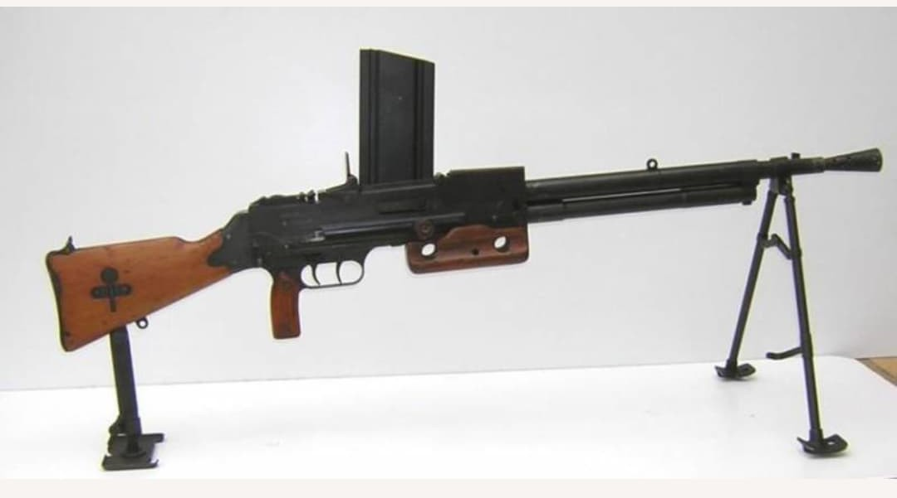
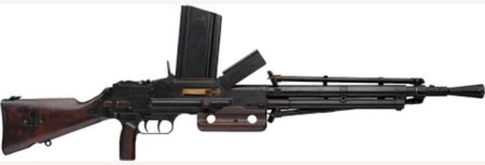

Les armes françaises de la Seconde Guerre mondiale représentent un ensemble varié de modèles issus de plusieurs décennies d’évolution. Entre modernisation rapide, héritage de la Grande Guerre et innovations techniques, l’armement français de 1915 à 1945 reflète une période complexe où coexistent équipements anciens et armes de conception récente.
Cette section du Musée HOP WW2 présente l’ensemble des armes blanches, fusils, pistolets, fusils-mitrailleurs, mitrailleuses et armes d’appui utilisées par les forces françaises durant le conflit. Chaque fiche offre une description détaillée, des photographies, et les éléments permettant d’identifier un modèle authentique.
Le FM 24/29 est le fusil-mitrailleur standard de l’armée française à partir de 1929. Conçu pour remplacer le Chauchat, il se distingue par sa fiabilité, sa précision et sa robustesse. Il devient l’arme automatique principale des groupes de combat français durant la campagne de 1939–1940.
Chambré en 7,5×54 mm, il offre une cadence de tir régulière et une excellente stabilité grâce à son bipied. Il est utilisé par l’infanterie, les troupes motorisées, les unités coloniales et les formations de forteresse.


Le FM 24/29 est adopté en 1929 et devient rapidement l’arme automatique la plus fiable de l’armée française. Il est utilisé intensivement durant la campagne de France en 1940, où il constitue la pièce maîtresse du feu de groupe.
Après la Seconde Guerre mondiale, il continue sa carrière en Indochine, en Algérie et dans les unités françaises jusqu’aux années 1960, avant d’être remplacé par le AA‑52.